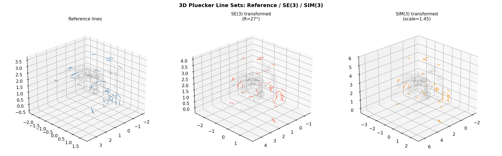
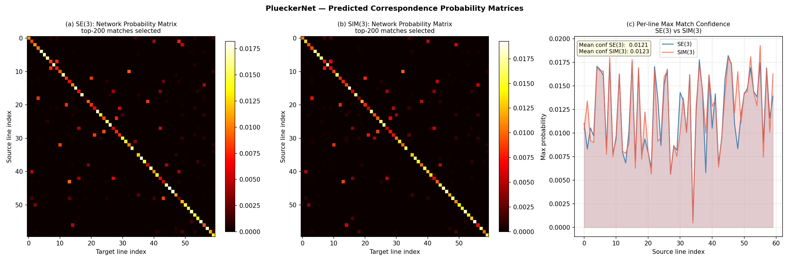
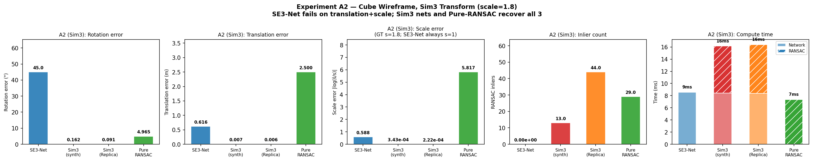
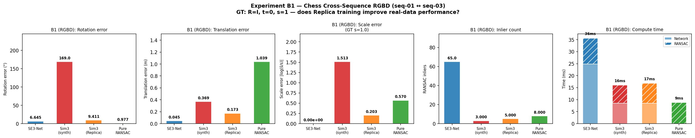
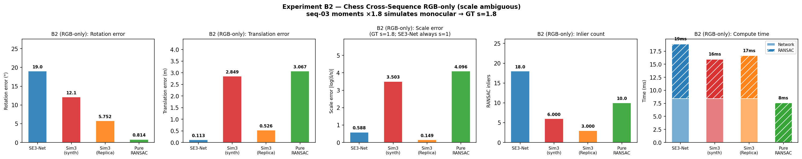
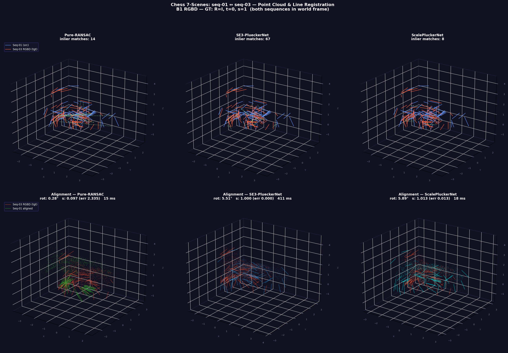
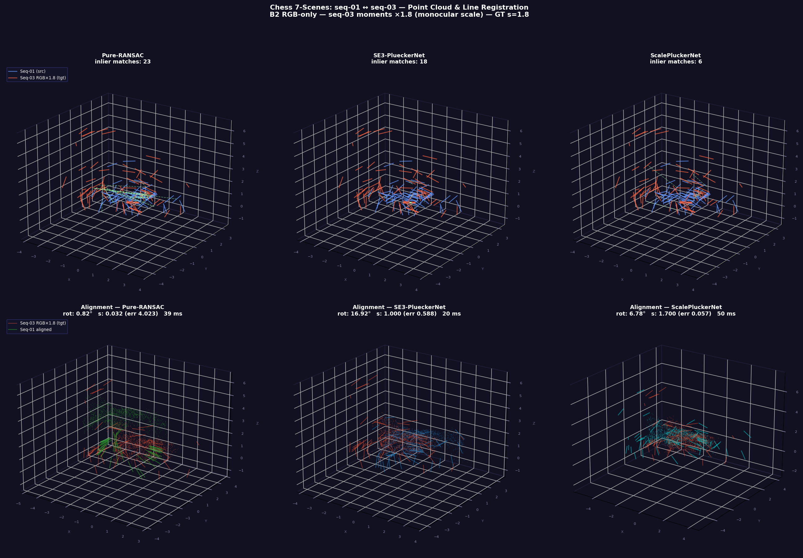
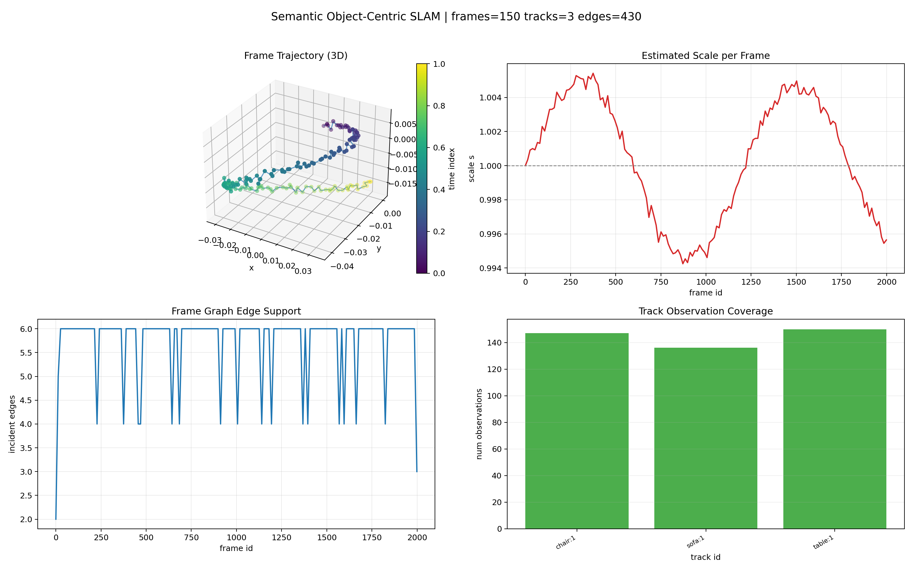
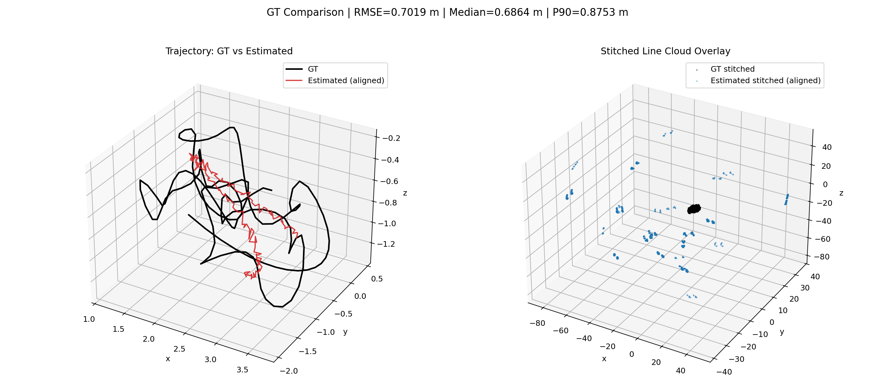

Extending 3D line registration from SE(3) to Sim(3) — jointly recovering rotation, translation, and scale from Plücker line correspondences.
Department of Robotics · University of Michigan, Ann Arbor · 2026
Analytical proof + experiments showing the SE(3) Plücker solver fails structurally under Sim(3): correct rotation, biased translation.
Minimal 2-correspondence solver: SVD on direction pairs for R, then a 6×4 least-squares system for (s, t) jointly.
Trained on Replica RGBD geometry (7 scenes, 4200 pairs) — closes the 89° synthetic-to-real gap to 9.4° on Chess.
Appends per-line RGB to 6D Plücker coordinates; 30% color dropout enables a single model to handle RGBD, RGB-only, and mixed inputs.
The PluckerNetKnn architecture is unchanged — only the RANSAC back-end is extended from SE(3) to Sim(3).
Given R (from direction SVD, scale-invariant), each line contributes one moment equation:


Four experiments across synthetic and real scenes, comparing SE3-PlueckerNet, Sim3-Net (synthetic), ScalePluckerNet (Replica-trained), and pure Sim(3) RANSAC.



| Experiment | Method | Rot (°) ↓ | Scale err ↓ | Inliers |
|---|---|---|---|---|
| A1 — Synthetic cube, SE(3) (s = 1) | ||||
| SE3-PlueckerNet | 159.60 | 0.000 | 46 | |
| Sim3-Net (synthetic) | 0.23 | 0.001 | 20 | |
| ScalePluckerNet | 0.03 | 0.000 | 49 | |
| Pure Sim(3) RANSAC | 48.78 | 5.722 | 36 | |
| A2 — Synthetic cube, Sim(3) (s = 1.8) | ||||
| SE3-PlueckerNet | 45.00 | 0.588 | 0 | |
| Sim3-Net (synthetic) | 0.16 | 0.000 | 13 | |
| ScalePluckerNet | 0.09 | 0.000 | 44 | |
| Pure Sim(3) RANSAC | 4.97 | 5.817 | 29 | |
| B1 — Chess 7-Scenes RGBD (s = 1) | ||||
| SE3-PlueckerNet | 6.65 | 0.000 | 65 | |
| Sim3-Net (synthetic) | 168.99 | 1.513 | 3 | |
| ScalePluckerNet | 9.41 | 0.203 | 5 | |
| Pure Sim(3) RANSAC | 0.98 | 0.570 | 8 | |
| B2 — Chess 7-Scenes RGB-only (simulated monocular, s = 1.8) | ||||
| SE3-PlueckerNet | 19.02 | 0.588 | 18 | |
| Sim3-Net (synthetic) | 12.10 | 3.503 | 6 | |
| ScalePluckerNet | 5.75 | 0.149 | 3 | |
| Pure Sim(3) RANSAC | 0.81 | 4.096 | 10 | |


Appending per-line RGB — [m₀ m₁ m₂ d₀ d₁ d₂ r g b] — with 30% color dropout for robustness to colorless inputs.
| Model | Val set | Inlier ratio | Recallrot | Med. rot |
|---|---|---|---|---|
| ScalePluckerNet (6D) | replica_valid (room2) | 99.185% | 1.000 | 0.00° |
| ScalePluckerNet (9D color) | replica_valid (room2) | 99.355% | 1.000 | 0.00° |
ScalePluckerNet used as a SLAM front-end: persistent object tracks create Sim(3) frame-to-frame edges. Evaluated on Replica room2 (150 frames, 3 tracks) against ground-truth trajectories.


| Model | ATE RMSE (m) ↓ | Median (m) ↓ | P90 (m) ↓ |
|---|---|---|---|
| Sim3-Net (synthetic) | 0.694 | 0.685 | 0.873 |
| ScalePluckerNet | 0.702 | 0.686 | 0.875 |
Both models exceed 99% inlier ratio — the ATE bottleneck is sparse object track coverage (3 tracks / 150 frames), not matcher quality.
If you use this work, please also cite the original PlueckerNet: